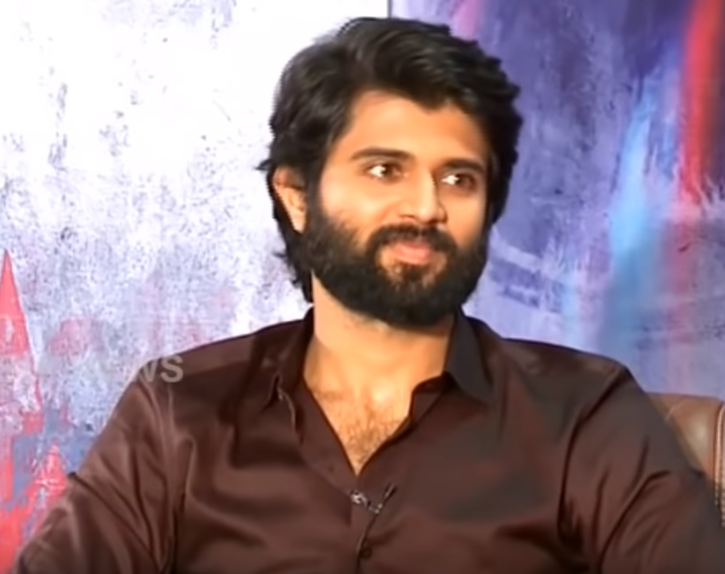
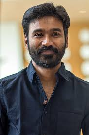
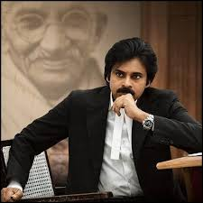
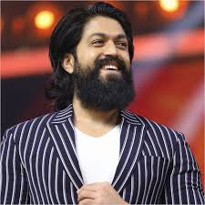
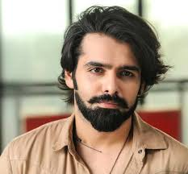

bookmarking





VIJAY_DEVARAKONDA
Deverakonda Vijay Sai (born 9 May 1989), professionally known as Vijay Deverakonda,[1] is an Indian actor and film producer who works predominantly in Telugu films.[2][3] One of the highest-paid actors of Telugu cinema, he has featured in Forbes India's Celebrity 100 list since 2018 and has received several accolades, including a Filmfare Award, a Nandi Award, and two SIIMA Award.[4]
Deverakonda made his debut with Nuvvila (2011) and received praise for his role in the coming-of-age drama Yevade Subramanyam (2015). He rose to prominence as a leading film actor by starring in the blockbusters Pelli Choopulu (2016) and Arjun Reddy (2017), winning the Filmfare Award for Best Actor – Telugu for his performance as a volatile surgeon in the latter. He further established himself with commercially successful films such as Mahanati (2018), Geetha Govindam (2018), and Taxiwaala (2018).[5][6] This success was followed by a series of poorly received films such as the critically panned big-budget action film Liger (2022).
In 2019, Deverakonda launched his own production house King of the Hill Entertainment, which produced Meeku Maathrame Cheptha (2019) and Pushpaka Vimanam (2021).[7][8] Beyond his film career, Deverakonda has designed his own fashion brand Rowdy Wear, which launched on Myntra in 2020,[9] and is the co-owner of the volleyball team Hyderabad Black Hawks.[10] Deverakonda is also a celebrity endorser for numerous products and supports various humanitarian causes.
Early life
Deverakonda Vijay Sai was born in Hyderabad, Andhra Pradesh (now Telangana) to Govardhan Rao and Madhavi.[11][12] His family hails from Thummanpeta village of erstwhile Mahbubnagar district (now Nagarkurnool).[11][13] His father was a television serial director who quit doing them due to lack of success.
Vijay completed his schooling from Sri Sathya Sai Higher Secondary School, Puttaparthi.[14] He then studied Intermediate at the Little Flower Junior College, Hyderabad.[15] He holds a Bachelor of Commerce degree from Badruka College of Commerce & Arts.[13][16] His younger brother, Anand Devarakonda, is also an actor in Telugu cinema.
DHANUSH
Venkatesh Prabhu Kasthuri Raja (born 28 July 1983),[2] known professionally as Dhanush, is an Indian actor, producer, director, lyricist and playback singer who primarily works in Tamil cinema.[3] Having starred in 50 films over his career, his accolades include four National Film Awards (two as actor and two as producer), fourteen SIIMA Awards, eight Filmfare Awards South and a Filmfare Award.[4] One of the highest paid actors in Indian cinema, he has been included in the Forbes India Celebrity 100 list six times.[5]
Dhanush's first film was Thulluvadho Ilamai, a 2002 coming-of-age film directed by his father, Kasthuri Raja. He achieved further success in Polladhavan (2007) and Yaaradi Nee Mohini (2008), both of which were critically acclaimed and commercially successful.[6] His role as a rooster fight jockey in Aadukalam (2010) won him the National Film Award for Best Actor and the Filmfare Award for Best Actor – Tamil.[7] He continued success with films including Maryan (2013), Velaiilla Pattadhari (2014), Anegan (2015), Kodi (2016), Vadachennai (2018), Asuran (2019), Thiruchitrambalam (2022) and Vaathi (2023). Vadachennai emerged as the highest-grossing A-rated Tamil film of all time, while Thiruchitrambalam and Vaathi entered the 100 Crore Club within a month of their release.[8] During the 2010s, he also starred in the action films Maari (2015), Maari 2 (2018), and Velaiilla Pattadhari 2 (2017).
In 2011, Dhanush's popular bilingual song "Why This Kolaveri Di" from the romantic psychological thriller film 3 (2012) became the first Indian music video to cross 100 million views on YouTube.[9] He made his Hindi film debut with Aanand L. Rai's Raanjhanaa (2013). His performance as an obsessive one-sided lover in the film won him the Filmfare Award for Best Male Debut in addition to a nomination for the Filmfare Award for Best Actor.[10] Dhanush produces films through his production company, Wunderbar Films,[11] and he made his directorial debut with Pa Paandi (2017).[12][13] His song "Rowdy Baby" from Maari 2 became one of the most-viewed Indian songs of all time.[14] It is the first South Indian video song to reach 1.5 billion views on YouTube.[15] Dhanush won his second National Film Award for Best Actor for Asuran (2019).[16]
Early life
Dhanush was born as Venkatesh Prabhu Kasthuri Raja[17] on 28 July 1983 to Tamil film director and producer, Kasthuri Raja, and his wife, Vijayalakshmi, in Madras, Tamil Nadu.[18] Initially he wished to study Hotel Management and become a chef.[19] However his elder brother, film director Selvaraghavan, pressured him to become an actor.[20][21] Dhanush also has two sisters named Vimalageetha and Karthiga Karthik.[22]
pspk
Konidala Pawan Kalyan[3] (born Konidala Kalyan Babu; 2 September 1971[2]) is an Indian politician and actor who has been serving as the 10th deputy chief minister of Andhra Pradesh since June 2024. He is also serving as the Minister of Panchayat Raj, Rural Development & Rural Water Supply; Environment, Forests, Science & Technology in the Government of Andhra Pradesh. He is the founder and president of the Jana Sena Party.
As an actor, Kalyan primarily works in Telugu cinema and is known for his unique style and mannerisms. He has a huge fan base[4] and is one of the highest-paid actors of Indian cinema. He has been featured in Forbes India's Celebrity 100 list multiple times since 2013. Kalyan is the recipient of a Filmfare Award South and a SIIMA Award among other accolades.[8]
Kalyan made his acting debut in the 1996 film Akkada Ammayi Ikkada Abbayi, but rose to prominence with the dramas Gokulamlo Seeta (1997) and Suswagatham (1998). He achieved stardom for his performance in Tholi Prema (1998), which won the National Film Award for Best Feature Film in Telugu that year. Kalyan established himself as a leading actor with successful projects such as Thammudu (1999), Badri (2000), Kushi (2001), Jalsa (2008), Gabbar Singh (2012), Attarintiki Daredi (2013), Gopala Gopala (2015), and Bheemla Nayak (2022). He received the Filmfare Award for Best Actor – Telugu for Gabbar Singh. Kushi and Attarintiki Daredi held the record of being the highest-grossing Telugu film of all time.[9] In addition to acting, he produces films under the banners Anjana Productions and Pawan Kalyan Creative Works.
In 2008, Kalyan entered into politics as the youth wing president of his brother Chiranjeevi's Praja Rajyam Party, but he left after it merged into the Congress party. He founded the Jana Sena Party in March 2014. He is a black belt in Karate and trains in various martial arts which he depicts in his films regularly. Kalyan is referred to as Power Star by his fans and in the media. Kalyan is the founder of the charity Common Man Protection Force.[14]
Early life and education
Kalyan was born as Konidala Kalyan Babu[15] on 2 September 1971[2] in a Telugu family to Konidala Venkata Rao and Anjana Devi in Bapatla, Andhra Pradesh.[19][20] Venkata Rao worked as a police constable and was transferred on a regular basis.
Kalyan was educated at the St. Joseph's High School in Nellore.[21] He was awarded the title "Pawan" during one of his public martial arts presentations.[22] He also holds a black belt in Karate.[23]
YASH
Naveen Kumar Gowda (born 8 January 1986), well known by his screen name Yash, is an Indian actor who predominantly works in Kannada films. His career began in Television and landed in cinema. He is a recipient of three Filmfare Awards South and two SIIMA awards.[1][2][3]
Yash began his career with appearances in several television series in the 2000s. He made his film debut in 2007 with Jambada Hudugi. The 2008 romantic drama Moggina Manasu, for which he received the Filmfare Award for Best Supporting Actor, proved to be a breakthrough role for Yash. His first film in a leading role, Rocky (2008), was poorly received by critics and a box office flop[citation needed]. He followed it up with a series of romance films that were commercial successes and received his first Filmfare Award for Best Actor nomination for Drama in 2012.
Yash went on to establish himself as a leading actor of Kannada cinema with the college romance Googly (2013), comedy-drama Raja Huli (2013), fantasy action Gajakesari (2014), romantic comedy Mr. and Mrs. Ramachari (2014), action film Masterpiece (2015) and action romance Santhu Straight Forward (2016). Mr. and Mrs. Ramachari ranks among the highest-grossing Kannada releases and gave Yash his first Filmfare Award for Best Actor. The pan-India success of Prashanth Neel's 2018 period action film K.G.F: Chapter 1, which became the highest-grossing Kannada film, helped Yash attain nationwide recognition in India and win his second Filmfare Award for Best Actor. He won further praise for his performance in the sequel, K.G.F: Chapter 2 (2022), which currently ranks as the fourth highest-grossing Indian film worldwide and second highest-grosser in India.
Yash promotes various social and philanthropic causes through the Yasho Marga Foundation. He is married to the actress Radhika Pandit. Yashomarga is a charitable foundation established by Kannada film star Yash and his wife Radhika Pandit. [4]
Early life and television roles
Yash was born on 8 January 1986 in Boovanahalli, a village in Hassan, Karnataka.[5][6] He was given two names: Naveen legally, and his mother's side of the family named him Yashwanth.[7][a] Yashwanth was chosen as they believed his time of birth astrologically necessitated a name beginning with the letter ಯ (ya).[9] In keeping with a Hindu tradition of giving children a deity's epithet, Yash was described as Nanjundeshwara ("poison-drinker god", referring to Shiva).[9][10] Before starting his acting career, he was advised by others in the industry to adopt a stage name.[11] Desiring to stand out with a name that was unique for an actor in Karnataka, he shortened Yashwanth to Yash.[12]
Yash's father, Arun Kumar Gowda, was a driver for the Karnataka State Road Transport Corporation and later the Bangalore Metropolitan Transport Corporation. His mother, Pushpa, is a homemaker.[13][14] He has a younger sister, Nandini, who is married to a computer engineer.[14] Yash aspired to be an actor from a young age and actively participated in theatre and dance competitions at his school in Mysore.[13] When he was young, his family also ran a provision store, where he would help out regularly.[15] Yash wanted to quit school and pursue full-time acting after completing grade 10 but had to complete senior school on the demand of his parents.[13] He studied at the Mahajana Education Society for all his school years.[16] His parents initially disapproved of his acting ambitions, and his father wanted him to be a government officer.[15] In 2003, they relented and allowed him to move to Bangalore at the age of 16 to work on a film as an assistant director, but stated that he would not be allowed to go back if he returned.[13] The project was cancelled after only two days of filming, but Yash stayed in Bangalore.[13] He stated he had ₹300 (equivalent to ₹1,100 or US$13 in 2023) with him at the time.[15] He joined a theatre group, the Benaka drama troupe, which was formed by dramatist B. V. Karanth.[17] He worked as a backstage worker and was paid ₹50 (60¢ US) per day.[13]
Yash eventually became a backup actor, and in 2004, portrayed Balarama, the lead role in a play.[13] While still working in theatre, he completed his Bachelor of Arts at Bangalore's K.L.E. College.[16] He made his television debut the same year with the teleserial Uttarayana.[14] In 2005, he was offered a role in the teleserial Nanda Gokula, where he starred alongside Radhika Pandit.[13] He went on to appear in several other teleserials such as T. N. Seetharam's Male Billu and Preeti Illada Mele.[14][13] Once Yash had secured a stable income, his parents moved in with him to Bangalore.
Ram
Ram Pothineni (born 15 May 1988) is an Indian actor who primarily works in Telugu films. Known for his energetic screen presence, he earned one Filmfare Award and one SIIMA Award for his work.[1]
Pothineni made his acting debut with the box office success Devadasu (2006), for which he won the Filmfare Award for Best Male Debut – South. He achieved his breakthrough in 2008 with the blockbuster action comedy Ready (2008). Pothineni continued to established himself as a leading man with critical and commercial successes such as Maska (2009), Kandireega (2011), Pandaga Chesko (2015), Nenu Sailaja (2016), Hello Guru Prema Kosame (2018), iSmart Shankar (2019), and Red (2021).[2]
Beyond his film career, Pothineni endorses many products and is a brand ambassador for Garnier.
Early life
Ram Pothineni was born on 15 May 1988, in Hyderabad, to Murali Pothineni. He is the nephew of Telugu film producer, Sravanthi Ravi Kishore.[3] Actor Sharwanand is his cousin.[4] His family hails from Vijayawada, Andhra Pradesh.
Career
Debut and early career (2006–2010)
Pothineni first appeared in Tamil language short film Adayaalam (2002) where he played an 18-year old drug addict.[1] He then made his theatrical debut in 2006 with Devadasu.[5][6] His second film, Jagadam opposite Isha Sahani was directed by Sukumar. He then appeared in Ready alongside Genelia D'Souza directed by Srinu Vaitla which was a commercial success.[7] In 2009, he had two releases, Maska and Ganesh: Just Ganesh.
In 2010, Pothineni had only one release, Rama Rama Krishna Krishna, produced by Dil Raju and directed by Srivaas.